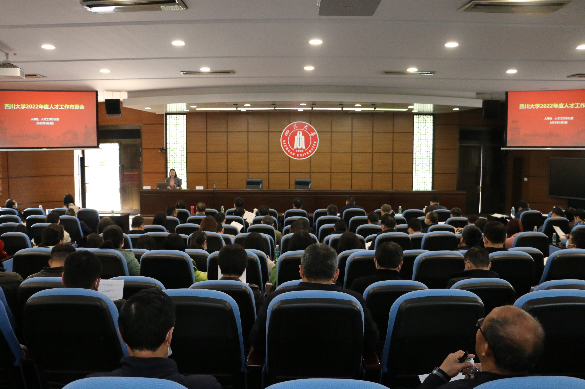

学院通知 · 科研创新
【春耕正当时】学校召开2022年度人才工作布置会
发布时间：2022-03-05
3月3日下午，学校在望江校区明德楼召开2022年度人才工作布置会，安排部署2022年度学校人才重点工作。副校长张林，各职能部门负责人，各学院书记和院长、分管人才工作的相关领导、人事干事及有关人员参加大会。会议由人才办副主任刘丸源主持。 会上，人事处处长、教师工作部部长吴尧对学校2021年度人才工作进行了全面总结，多维度对标全国10余所双一流高校，详尽分析了我校高端人才队伍建设存在的问题和面临的机遇，并结合学校“人才强校”战略安排，对学校2022年度人才重点工作进行精细化部署。吴尧处长强调人才工作要加强顶层设计，做到有组织，有谋划。学校人事系统将和二级单位一起围绕国家急需紧缺方向，加大全球引才力度，全面落实“精准引才”和“专项引才”，加快校内人才培育的“提质增效”，提升师资队伍建设质量，促进人才工作的全面发展。 商学院副院长姚黎明，化学学院党委书记谢均，水利水电学院院长杨兴国以及华西医院常务副院长刘伦旭分别就学院现有师资情况、引才育才经验、人才队伍建设存在的问题和不足以及下一步工作计划等方面进行了交流发言。 随后，张林副校长做总结讲话，他指出，新一轮科技革命和产业变革迅猛发展，人才竞争空前激烈。面对机遇和挑战，学校深入贯彻落实中央人才工作会议精神和习近平总书记对人才工作的新理念新思想新战略，全面吹响建设一流人才队伍，深入实施人才强校战略的号角。他强调，“人才强校” “战略深入推进要有清晰的目标，各单位要聚焦国家发展战略，对标学校“双一流”建设任务，做有组织的有谋划的人才队伍建设，认真落实学校设立的任务指标，建议各个学院设立人才工作办公室，对人才队伍建设进行总体规划，落实实施路径和举措，补齐发展短板，促进人才优势转换为发展优势。 上一条： 姚乐野副校长看望慰问我校文科讲席教授李水城 下一条： 我校组织博士后青年教师召开2022年度国家自然科学基金、国家社会科学基金、国家博士后基金申报动员大会
